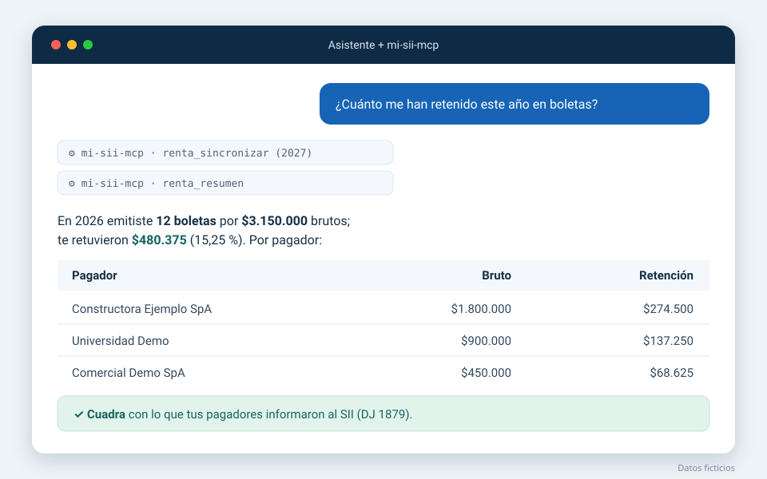
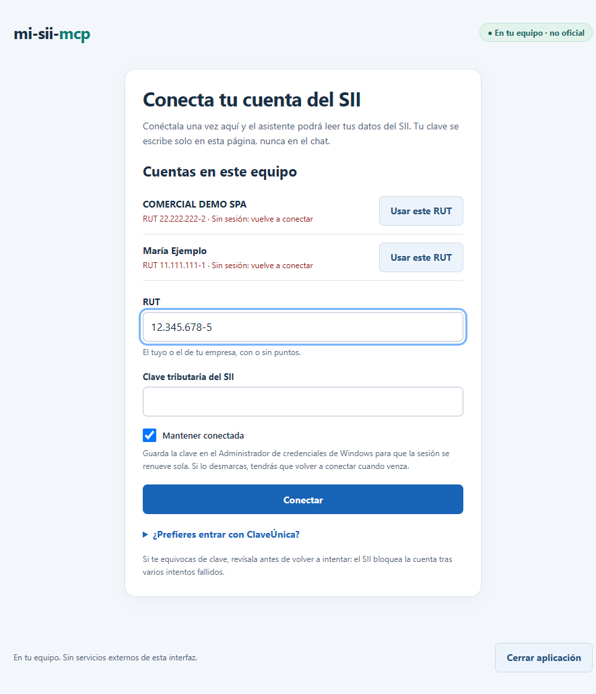

IVA y F29
Registro de Compras y Ventas (RCV), F29 presentados con su PDF y propuesta de F29. Concilia el IVA del RCV con el F29 y detecta F29 faltantes y facturas por reclamar.
Conecta Claude, Codex, Cursor o Gemini CLI con tu IVA, tus F29, tu renta F22 y tus boletas de honorarios. mi-sii-mcp lee tu información del SII, la guarda en tu equipo y la concilia para mostrarte qué cuadra, qué no y qué vence.

MCP (Model Context Protocol) es un estándar abierto para que los asistentes de inteligencia artificial usen herramientas externas. mi-sii-mcp es un servidor MCP que le entrega a tu asistente herramientas para leer tu información tributaria del Servicio de Impuestos Internos y aplicar reglas de conciliación. En vez de copiar y pegar datos del portal, le preguntas a tu asistente en lenguaje natural.
Una sola vez, en una página local. Tu clave se escribe ahí, nunca en el chat.
Pide los datos al servidor MCP, que los lee del SII en solo lectura y los guarda en tu equipo.
Cruza registros con reglas tributarias y responde con hallazgos claros: qué cuadra y qué revisar.
Lo que mi-sii-mcp lee del SII y cómo lo concilia. Todo en solo lectura: nunca presenta, modifica ni emite nada.
Registro de Compras y Ventas (RCV), F29 presentados con su PDF y propuesta de F29. Concilia el IVA del RCV con el F29 y detecta F29 faltantes y facturas por reclamar.
Calcula el vencimiento del F29 según tu caso (día 12, 20 o 28) a partir de tu perfil tributario.
Declaraciones por año tributario, folio vigente, códigos, observaciones y eventos como devoluciones y giros.
Recibidas y emitidas, con detalle boleta por boleta. Cruza la retención con el F29 (código 151) y con la renta (códigos 547 y 492).
Declaraciones juradas que otros presentan sobre ti, cruzadas con tus boletas y tu F22. Avisa si el SII observó la declaración de un informante.
Consultas SQL de solo lectura sobre tus datos guardados y fuentes oficiales para los valores públicos (UTM, tablas, tasas).
mi-sii-mcp es un servidor MCP local (stdio): funciona con los clientes que ejecutan servidores MCP locales. El desarrollo y las pruebas en vivo se hicieron con Claude Code; para los demás se documenta su formato de configuración estándar.
| Cliente | Estado | Configuración |
|---|---|---|
| Claude Code | Probado | claude mcp add |
| Claude Desktop | Documentado | claude_desktop_config.json |
| Codex CLI | Documentado | ~/.codex/config.toml |
| Cursor | Documentado | ~/.cursor/mcp.json |
| VS Code con GitHub Copilot | Documentado | .vscode/mcp.json |
| Gemini CLI | Documentado | ~/.gemini/settings.json |
| Windsurf, Cline y otros | Documentado | Formato mcpServers |
Tu información tributaria no pasa por servidores de terceros: mi-sii-mcp corre en tu equipo y habla directamente con el SII.
~/.mi-sii-mcp.Preguntas reales que tu asistente puede responder con mi-sii-mcp.
¿Cuánto me han retenido este año en boletas de honorarios?
Suma la retención de tus boletas emitidas por mes y por pagador.
¿Cuadran mis boletas con lo que declaré en la renta?
Compara tus boletas con los códigos 547 y 492 del F22, considerando el reajuste por IPC.
¿Tengo algún F29 sin presentar o por vencer?
Revisa tus F29 y calcula cada vencimiento según tu caso.
¿Cuadra el IVA de compras y ventas con el F29 de septiembre?
Concilia el Registro de Compras y Ventas con el F29 del mes.
¿Qué informaron mis pagadores al SII sobre mí?
Lee las declaraciones juradas de terceros y las cruza con tus registros.
¿A quién le emití más boletas en 2026?
Consulta el detalle boleta por boleta guardado en tu equipo.
Requiere Node.js 22.12 o superior, un cliente MCP y tu clave tributaria del SII.
git clone https://github.com/Taksuma-0/mi-sii-mcp.git
cd mi-sii-mcp
npm install
npm run buildReemplaza C:\ruta\a\mi-sii-mcp por la carpeta donde clonaste el proyecto.
claude mcp add --scope user mi-sii-mcp -- node "C:\ruta\a\mi-sii-mcp\dist\interfaces\cli\bin.js" mcp[mcp_servers.mi-sii-mcp]
command = "node"
args = ["C:\\ruta\\a\\mi-sii-mcp\\dist\\interfaces\\cli\\bin.js", "mcp"]{
"servers": {
"mi-sii-mcp": {
"type": "stdio",
"command": "node",
"args": ["C:\\ruta\\a\\mi-sii-mcp\\dist\\interfaces\\cli\\bin.js", "mcp"]
}
}
}{
"mcpServers": {
"mi-sii-mcp": {
"command": "node",
"args": ["C:\\ruta\\a\\mi-sii-mcp\\dist\\interfaces\\cli\\bin.js", "mcp"]
}
}
}En Windows, abre Abrir mi-sii-mcp.cmd (en macOS o Linux, npm run local). Escribe tu RUT —los puntos y el guion se ponen solos— y tu clave tributaria, deja marcado «Mantener conectada» y pulsa Conectar. Puedes conectar tu RUT personal y los de tus empresas.
Reinicia tu asistente y pregunta, por ejemplo, «lista mis perfiles» o «trae mi renta de los últimos 3 años».

Es un servidor MCP de código abierto que permite que un asistente de IA consulte y concilie tu información tributaria del SII de Chile: IVA, F29, renta F22, boletas de honorarios y declaraciones de terceros.
MCP (Model Context Protocol) es un estándar abierto para que los asistentes de IA usen herramientas externas. Un servidor MCP para el SII le da a tu asistente herramientas para leer tus datos tributarios y aplicar reglas de conciliación, en vez de copiar y pegar información del portal.
Instala mi-sii-mcp con git clone, npm install y npm run build, regístralo en tu cliente MCP con node dist/interfaces/cli/bin.js mcp y conecta tu cuenta del SII en la página local. Claude Code está probado; para los demás clientes se usa su formato MCP estándar.
No. La clave se escribe solo en la página local o en la terminal, y ninguna herramienta del MCP la recibe. Si eliges mantener la sesión, la clave queda en el almacén de credenciales del sistema operativo.
En tu equipo, en una base SQLite en la carpeta ~/.mi-sii-mcp. Lo que preguntas y las respuestas sí pasan por tu asistente de IA, como cualquier conversación con él.
No. mi-sii-mcp solo lee el portal del SII; no presenta declaraciones, no emite documentos ni modifica nada.
No. Es un proyecto independiente de código abierto con licencia MIT y no reemplaza la asesoría de un contador.
Es gratuito y de código abierto. Solo necesitas un cliente MCP; el costo del asistente de IA depende de su proveedor.
mi-sii-mcp es gratuito y de código abierto. Revisa el código, instálalo en minutos o contribuye con mejoras.